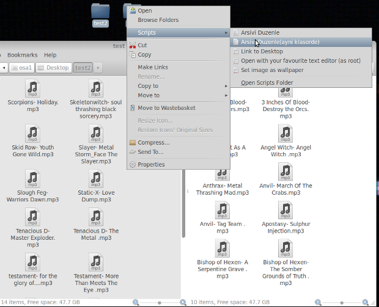
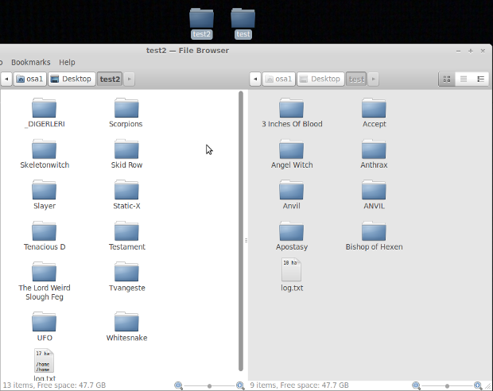
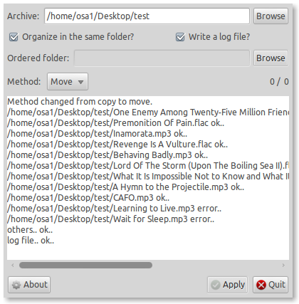

August 6, 2010 - Tagged as: python, tr.
Daha önceden burada duyurdum arşiv düzenleyiciyi biraz daha geliştirdim.
Programın amacı basitçe mp3, ogg ve flac dosyalarından oluşan müzik arşivinizi düzenlemek. Ayrı bir klasöre kopyalayabiliyor ya da aynı klasörde dosyaları taşıyarak düzenleyebiliyor. Formata uymayan dosyaları da ayrı bir klasörde topluyor.
Yeni sürümde bir de nautilus scripti hazırladım. Bunun sayesinde düzenlemek istediğiniz klasöre sağ tıklayıp seçerek daha kolay düzenlenebiliyor.
Önce:
Sonra:
Onun dışında aynı klasörde dosyaları taşıyarak düzenleme özelliğini de yeni ekledim. İki ayrı scriptten birisi aynı klasör içerisinde taşıyarak düzenleme için, diğeri ise yeni bir klasör oluşturup düzenli halde oraya kopyalıyor.
Kurulum için arşivi açıp, klasöre gelip python setup.py install komutunu vermelisiniz. Duruma göre, başına sudo veya benzeri birşey eklemeniz gerekebilir. Scriptlerin için de python script.py komutunu vermeniz yeterli.
Aşağıdaki şekillerde kullanılabilir:
En basit ve kullanışlı olanı, direkt klasöre sağ tıklayıp scripti seçmek. 2 ayrı script var, birisi yeni bir klasör oluşturup(seçtiğiniz klasörün altına) düzenli halde arşivi oraya kopyalar, arşivin büyüklüğüne bağlı olarak kopyalama işlemi uzun sürebilir fakat arşivinizde hiçbir şekilde değişiklik yapılmaz. İkinci yöntem ise kopyalamadan, taşır. Bu arşivinizin düzenini bozabilir. Fakat aslında daha kullanışlıdır.
Nautilus scriptini kullanmadan çalıştırmak için, hiç kurulum yapmadan direkt osa1 ve mutagen klasörlerini kopyalayarak, osa1.py arsiv_yeri, duzenli_arsiv_yeri şeklinde çalıştırabilirsiniz. Onun dışında kurulum yaparak from osa1 import osa1 şeklinde import edip osa1.duzenle() fonksiyonu ile kendi programlarınızda kullanabilirsiniz. Ya da .bashrc dosyanıza alias osa1='python "/usr/local/lib/python2.6/dist-packages/osa1/osa1.py"' satırını ekledikten sonra terminalden osa1 arsiv_yeri, duzenli_arsiv_yeri şeklinde çalıştırabilirsiniz.
Windows ortamında test etmedim fakat kaynak koda baktığımda çalışmaması için bir sebep göremiyorum. Kurulum yine aynı fakat script.py dosyasını çalıştıramazsınız. Haliyle düzenlemek istediğinizde komut satırından programı çalıştırmalısınız.
Buradan indirebilirsiniz.
EKLEME: Scripte arayüz ekledim. İşlev olarak tamamen aynı, sadece nautilus ile değil de, bir arayüz ile çalıştırmanız gerekiyor(bence bu hali daha kullanışlı). Gnome kullanmayanların işine yarayabilir. Daha detaylı bilgi için kendi sayfasına bakın.(Bu arada aşağıdaki de ekran görüntüsü)
